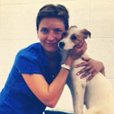
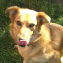
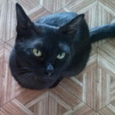
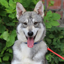

Новости
Фильтр отключен включить
свернуть

На прошлой неделе в «Краснодоге» побывали Наталья Юницына, директор международного фонда помощи животным «Дарящие надежду» и кинолог Ашот Петросян. Основатель приюта Наталья ...

Пса Оскара сбила машина. У него пострадали передние лапы. Благодаря стараниям наших врачей Оскар быстро шёл на поправку. Сейчас от былых травм не осталось и следа. Оскар мечтает ... На прошлой неделе в «Краснодоге» побывали Наталья Юницына, директор международного фонда помощи животным «Дарящие надежду» и кинолог Ашот Петросян. Основатель приюта Наталья ...
Вчера полдня безуспешно пыталась заставить себя сесть и продолжить написание гранта... но не шмогла, торжественно сдалась, попырилась в ютуб, узнав как тяжело живется людям-альбиносам.

"Краснодог, здравствуйте! Кот Супер передает Вам привет! Хочу выразить огромную благодарность за этого сорванца - сплошной позитив. С Боней(рыжий кот) подружились и теперь вместе по ...

Прекрасную статью выпустили в Science не британские, но однако аж целое международное собрание ученых.

Если вы работаете переводчиком с русского на английский, и у вас сейчас время есть, а денег нет и в гости некуда пойти, то ...
Расскажите мне, что вы тоже работаете на выходных дома или на работе.
На прошлой неделе в «Краснодоге» побывали Наталья Юницына, директор международного фонда помощи животным «Дарящие надежду» и кинолог Ашот Петросян. Основатель приюта Наталья ...
Пса Оскара сбила машина. У него пострадали передние лапы. Благодаря стараниям наших врачей Оскар быстро шёл на поправку. Сейчас от былых травм не осталось и следа. Оскар мечтает ...
"Краснодог, здравствуйте! Кот Супер передает Вам привет! Хочу выразить огромную благодарность за этого сорванца - сплошной позитив. С Боней(рыжий кот) подружились и теперь вместе по ...
Прекрасную статью выпустили в Science не британские, но однако аж целое международное собрание ученых.